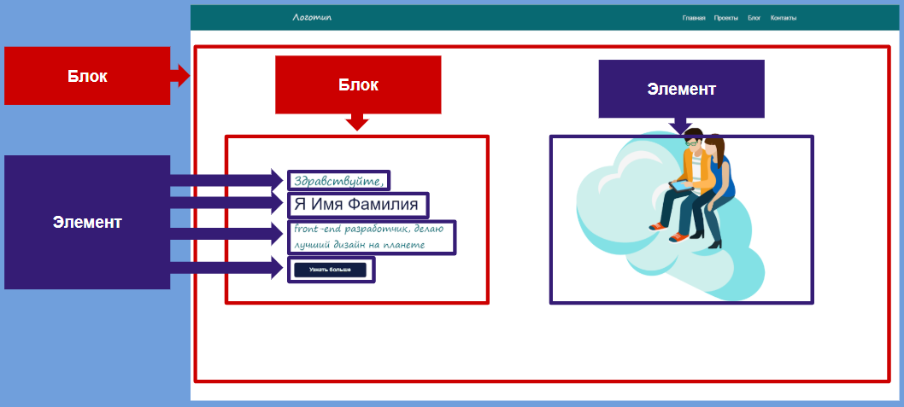
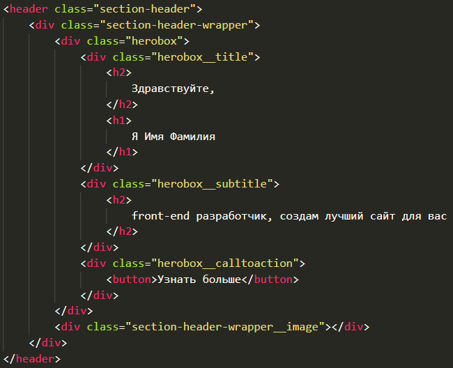
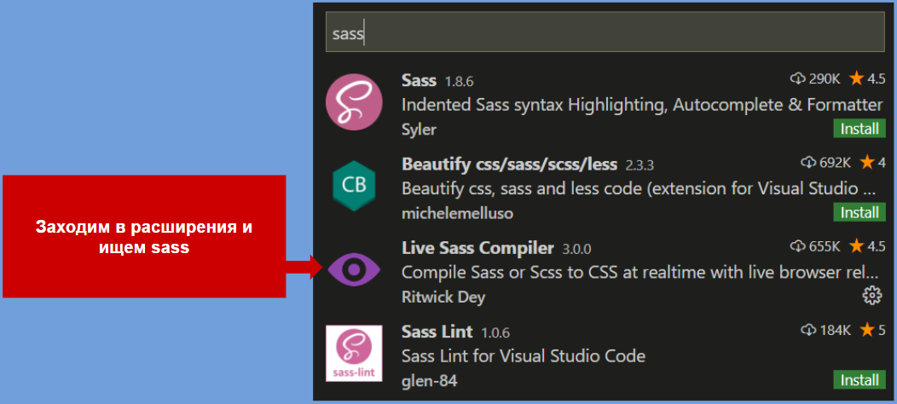
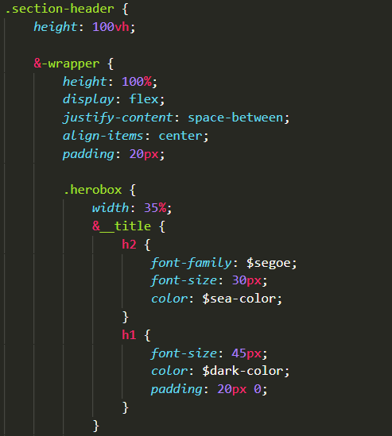
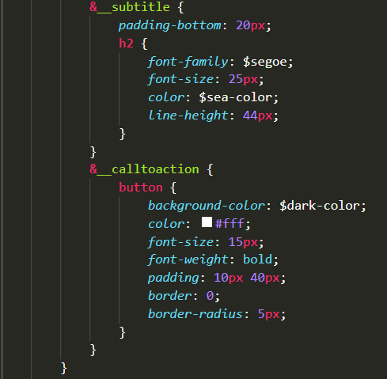

Ресурсы для создания сайта
BEM - методология
Sass - препроцессор для css
Примеры верстки по BEM
 
Как установить Sass

Создание CSS с помощью Sass препроцессора
Пример CSS для верстки главной страницы. Переменные с шрифтами и цветом находятся в отдельных .sсss файлах
 
Что почитать:
Книга - Отзывчивый веб-дизайн (скачать)
Книга - Не заставляйте меня думать (скачать)